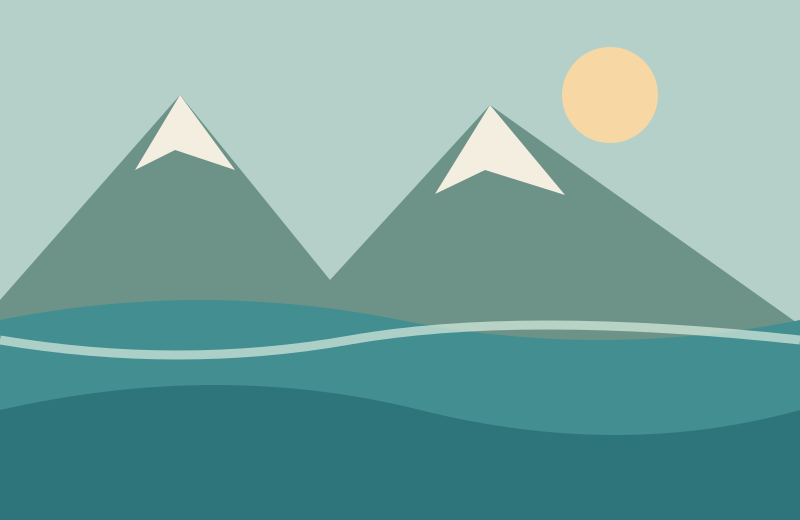

Stay curious
Look beyond the obvious and learn something new wherever you go.
A NOTE FROM US
We believe the best journeys make you come home with a wider view of the world.

OUR PHILOSOPHY
WanderWise is a concept travel-planning website created to make trip discovery feel simple and inspiring. It brings destination ideas and a basic trip planner together in one friendly place.
We think travel should make room for local culture, meaningful conversations, beautiful landscapes and the occasional detour. A thoughtful plan gives you confidence; an open mind makes the memories.
Find your next placeLook beyond the obvious and learn something new wherever you go.
Respect local communities, nature and the places that welcome you.
Your perfect trip doesn't have to look like anyone else's.